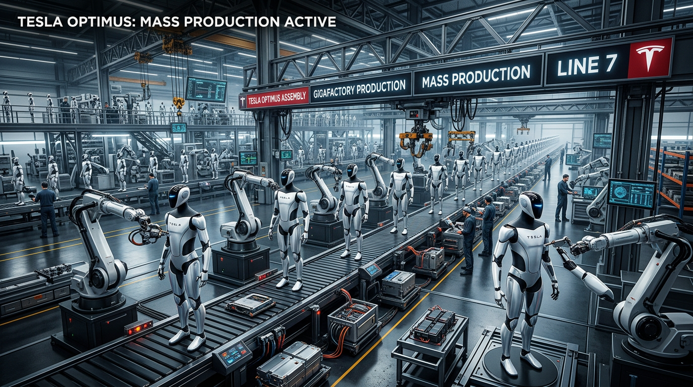
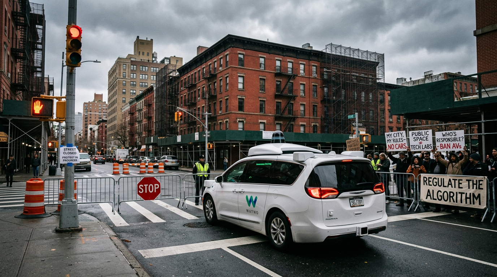

Tech & Trends


Tech & Trends
Teslas Optimus: Pilotproduktion startet, Massenfertigung folgt
Elon Musk hat konkreter geworden: Teslas humanoider Roboter Optimus startet diesen Sommer in die Pilotproduktion. Die Ma...

Tech & Trends
Intel und NVIDIA: Erzfeinde werden Partner
Zwanzig Jahre lang waren sie Rivalen. Jetzt arbeiten Intel und NVIDIA zusammen: 5 Milliarden Dollar Investition, gemeins...
Tech & Trends
Reddit knackt die Börse: 70% Wachstum, starke Marge
Reddit hat die Zahlen für Q4 2025 geliefert – und alle Erwartungen gesprengt. 70 Prozent Umsatzwachstum, EPS von 1,24 Do...

Tech & Trends
New York stoppt Waymo – Robotaxis vor dem Aus?
Waymo wollte expandieren. New York State sagt Nein. Die geplanten Robotaxi-Dienste außerhalb von NYC werden nicht genehm...